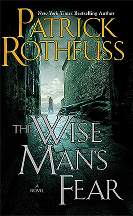

"The Wise Man's Fear"

- Read on 2011-06-11
- Rating: ▲▲▲▲▲
- Format: Physical (994 pages)
I wish I could rate this 5.5 stars, only so it would be rated higher than the first book of the series. Both books have been very enjoyable. I liked the wide array of locations in this book, but would actually cut out a bunch of time with the Fae, if I could.
- Read on 2018-03-31
- Rating: ▲▲▲▲▲
- Format: Audio (42 hours 55 minutes)
Second Review
The excessive discovery of a libido in this book continues to be off-putting to me, and irrelevant to the overall story (or at least, I hope so). It remains the single qualm I have with suggesting this book to younger readers. Despite that, this time through I enjoyed paying attention to the foreshadowing - there's enough of it in the first book that clearly points out later events, that I have to believe numerous clues are firmly ensconced in this second book. Each time I read this book, I'm also glad that Rothfuss was able to continue the narrative so well through some very different circumstances than the first book had.
- Read on 2018-10-30
- Rating: ▲▲▲▲▲
- Format: Audio (42 hours 55 minutes)
Third Review
(I didn't review it this time, but I'm comfortable I've listened to this book more than three times.)